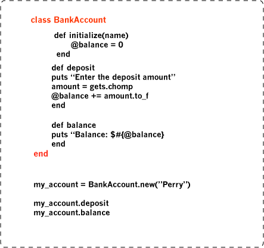
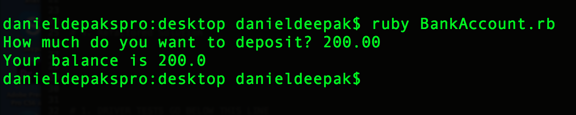

There's blocks, and then there's class
In Ruby, a class is a blueprint or many methods group together within one unit, from which new objects can be created. The objects that are created from the class can access and use the defined methods in the class. Classes also hold all the variables and attributes. Objects that belong to the same class have similar methods. For example "hello" is a string and it belongs to the string class. All the method defined in the string class can be applied to the string "hello". String methods like length, upcase, downcase and capitalize etc can be applied to any string object that is created.
Classes are very useful if you want to use a set of methods on many objects created by that class. By using classes you don't need to write blocks of code for each object to do the specified task every time. When you create an instance variable of a class, you can call any method that is built into that class.
Let us use a real world example of how classes can be used. Here is a simple class that lets you deposit some money and then shows your balance. This class has three methods. The first method is the initializing method; this method boosts the new object when it is created. The second method lets you deposit the money and the third method checks your new balance.
Result
You create an instance variable(object), which is an instance of the class BankAccount. This object is equivalent to opening a new account. You can open any number of accounts using this class. Each new account will use the two methods in the class. This repeated use of code is one of the many advantages of using class.